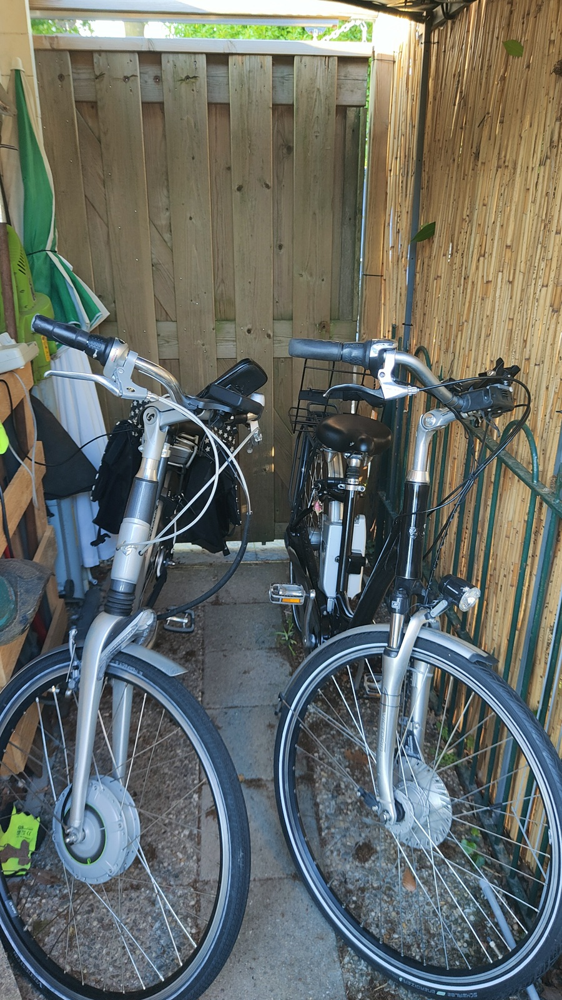
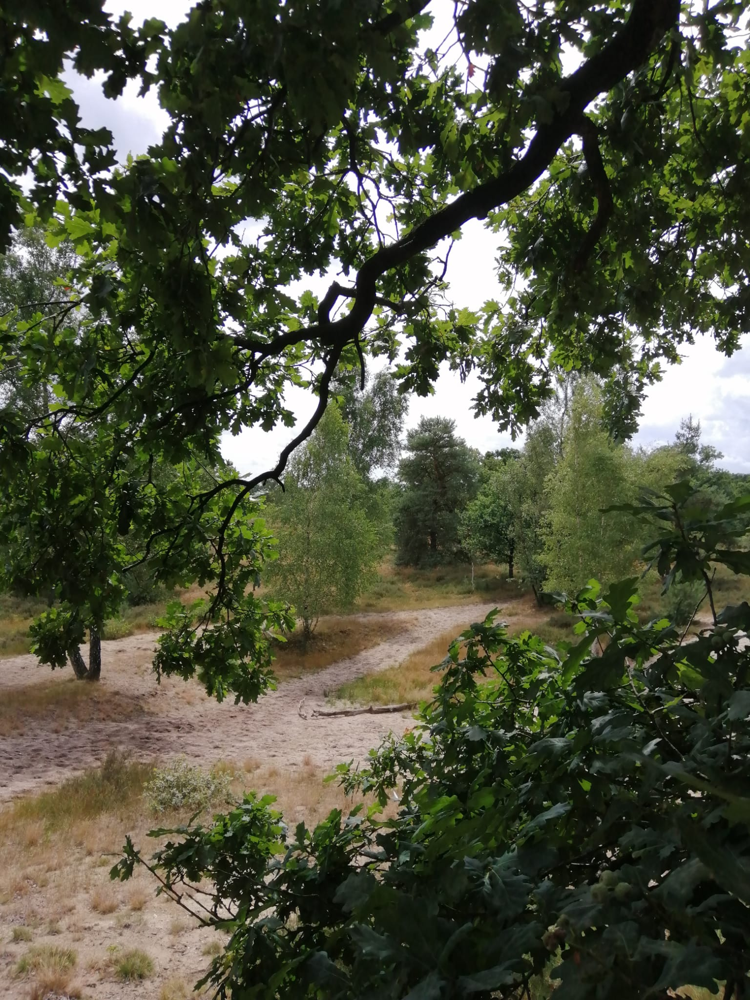

Gezellige stacaravan voor 4 personen op camping De Mölnhöfte, ideaal voor rust, fietsen, wandelen en jonge gezinnen.


⭐ 4/5 beoordeling van gasten
📅 Nog veel weken beschikbaar dit seizoen
Bekijk onze stacaravan in Diepenheim
Tussen Zutphen en Enschede ligt het dorpje Diepenheim, in de hof van Twente.
De omgeving van Diepenheim staat bekend om de 6 kastelen in de omgeving, waar u met de 6 kastelenroute heel mooi langs kunt fietsen. Daarnaast zijn er nog vele andere prachtige fietsroutes. Een fietstocht richting de heide, of toch liever door het bos? Het kan allemaal. Je raakt echt niet uitgefietst in deze omgeving.
Op een afstand van ongeveer 300 meter van camping “De Mölnhöfte” staat de eeuwenoude korenwatermolen 'Den Haller'. Deze watermolen is nog steeds in gebruik en is op bepaalde dagen opengesteld voor publiek. In het naastgelegen restaurant kunt u heerlijk lunchen of dineren. Hieraan heeft camping “De Mölnhöfte” de naam ontleend.
In Diepenheim ligt kasteel Warmelo, met de prachtige historische tuin. Elk jaar kunt u van begin mei tot begin oktober genieten van prachtige zandsculpturen in deze tuin. Kinderen tot 6 jaar mogen gratis naar binnen. Bij het kasteel is ook horeca, dus neem heerlijk plaats op het terras na afloop van je bezoek en geniet van een drankje met misschien wel een heerlijke versnapering.
Vlakbij de camping vind je het Oranjemuseum met een een scala aan voorwerpen die allemaal te maken hebben met het Koningshuis. Er is tevens een park aangelegd met wel 300 verschillende soorten planten, heesters en bomen die ook verband houden met het Koningshuis.
Op 2,5 km (7 minuten fietsen) van de camping ligt Pitch & Putt Twente, een mooie plek om 9 of 18 holes te gaan golfen. Geschikt voor zowel recreanten als professionals. Tevens kunt u hier een e-chopper huren om te rijden in de prachtige omgeving. Of kies voor een spelletje voetgolf.
Pak je de auto dan kun je in de omgeving nog meer plekken bezoeken, zoals het mooie Delden of Markelo. Of doe een dagje avonturenpark Hellendoorn of Duitsland, bv. Bad Bentheim.
Stacaravan te huur in Diepenheim, Twente – op camping De Mölnhöfte. Bekijk de beschikbaarheid en reserveringsmogelijkheden.